Visão geral
O Moodle dos cursos de extensão (cursosextensao.usp.br) está ligado ao Apolo. Cada turma do Apolo pode ganhar um ambiente no Moodle.
- As turmas sem ambiente aparecem no seu Painel, prontas para criar com poucos cliques.
- Os outros ministrantes podem ser inscritos de uma vez.
- Os alunos matriculados no Apolo são inscritos automaticamente.
- A tela Meus ambientes reúne todas as suas turmas, e os Detalhes mostram quem já está no curso.
Gerentes de categoria fazem o mesmo, para todas as turmas da sua unidade (veja a segunda parte).
O bloco USP Extensão
Entre em cursosextensao.usp.br e vá ao Painel. O bloco fica na gaveta da direita; se ela estiver fechada, clique em ‹ no canto superior direito.
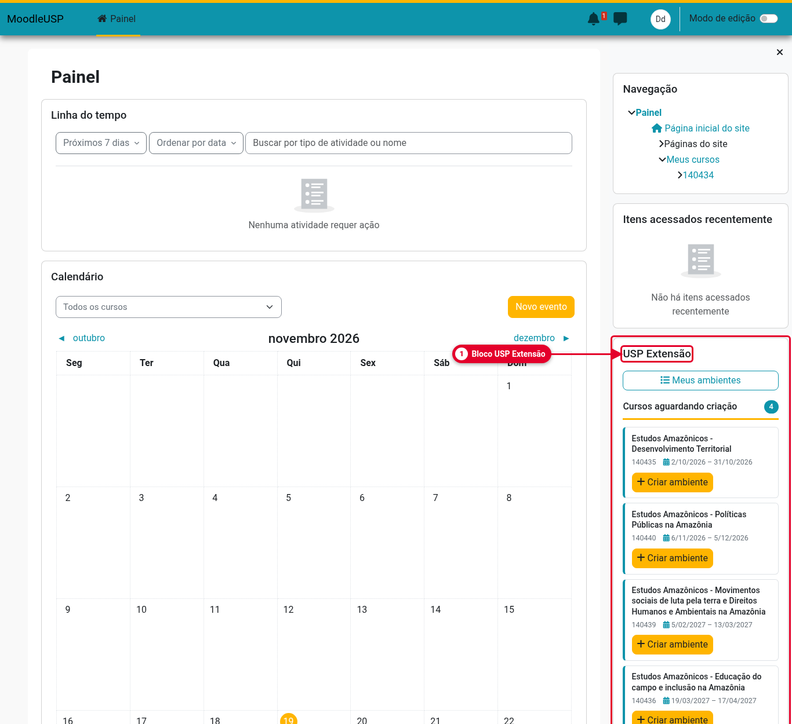
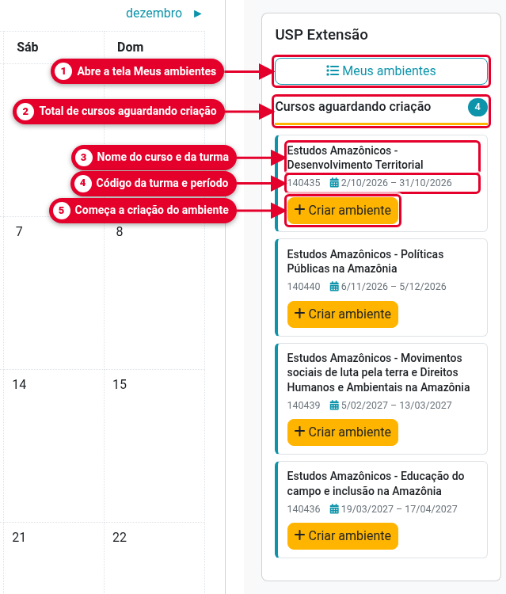
- Meus ambientes: todas as suas turmas, com ou sem ambiente.
- Quantas turmas suas ainda não têm ambiente.
- Nome do curso e da turma (passe o mouse para ver o nome inteiro).
- Código da turma no Apolo e período.
- + Criar ambiente: abre o formulário já preenchido.
Muitos cursos
Com mais de cinco turmas, o bloco ganha uma busca e a lista passa a rolar.
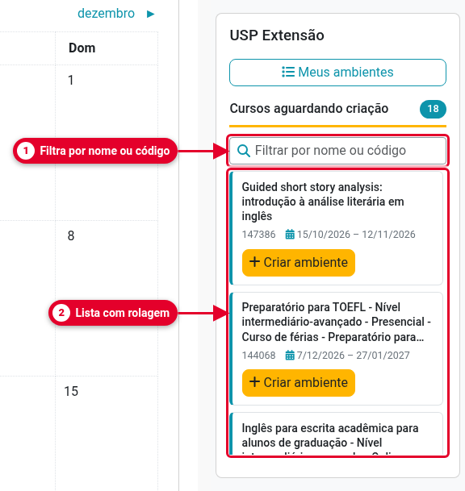
- Busca por nome ou código (acentos e maiúsculas não importam).
- Lista com rolagem; cada curso tem seu botão.
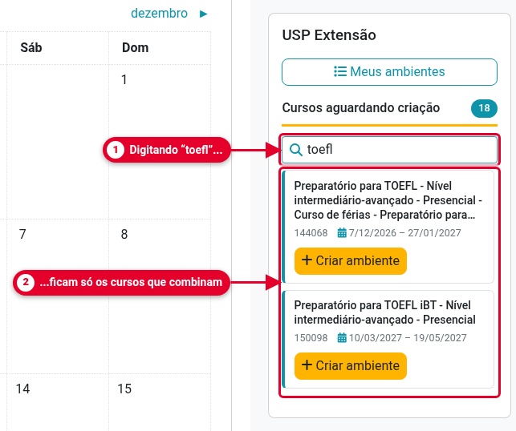
- Ao digitar toefl…
- …ficam só os cursos correspondentes. Dá para usar várias palavras.
Criar o ambiente
Clique em + Criar ambiente (no bloco, em Meus ambientes ou nos Detalhes). O formulário abre com os dados do Apolo.
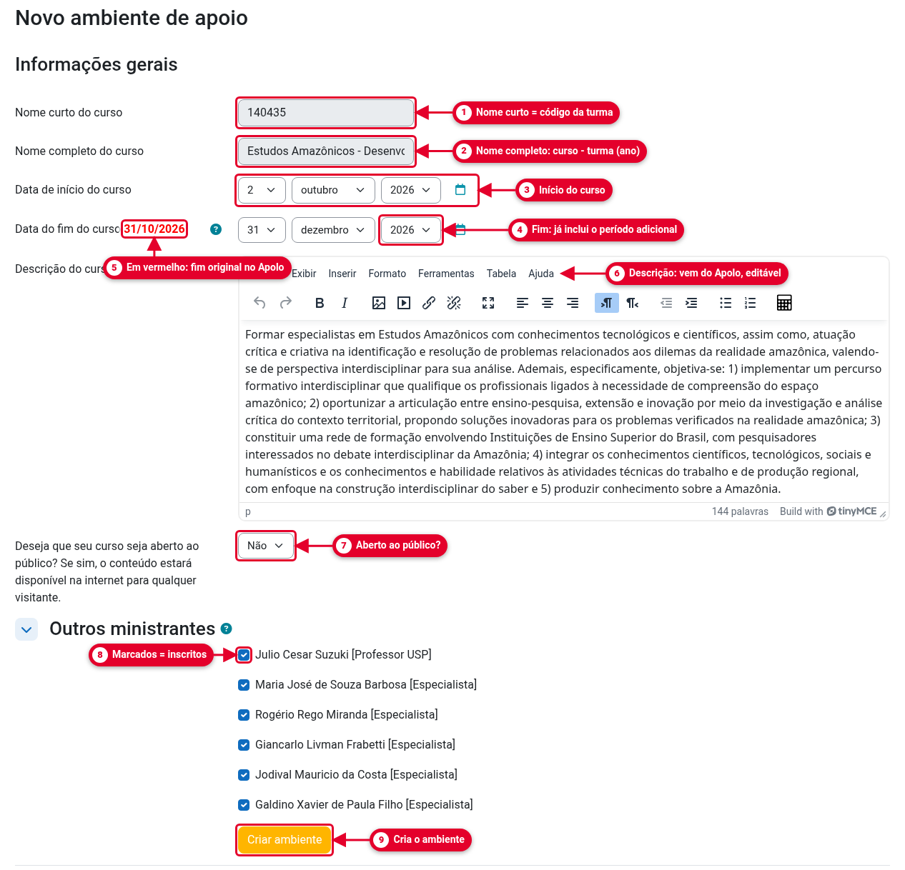
- Nome curto: código da turma (fixo).
- Nome completo: curso, turma e ano (fixo).
- Início do curso, vindo do Apolo.
- Fim do curso: data do Apolo mais um período adicional (hoje, 2 meses), para os alunos continuarem acessando o material.
- Em vermelho, o fim original no Apolo.
- Descrição: objetivo do curso no Apolo (fixa). Para mudá-la, altere no Apolo antes de criar o ambiente.
- Aberto ao público? “Sim” deixa qualquer visitante ver o conteúdo.
- Outros ministrantes: os marcados são inscritos com você.
- Criar ambiente.
O ícone ? ao lado de um campo mostra uma explicação:
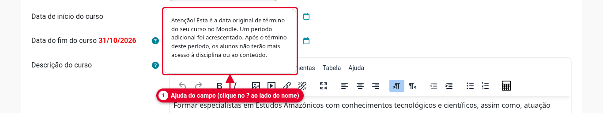
Depois de criar
Você é levado ao novo curso, com mensagens sobre o que foi feito.
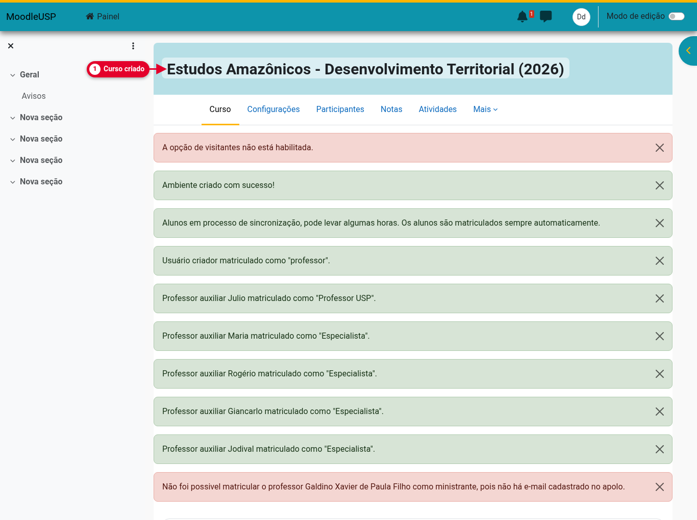
| Mensagem | Significado |
|---|---|
| verde Ambiente criado com sucesso! | Curso criado na categoria da sua unidade. |
| verde Alunos em processo de sincronização… | A inscrição dos alunos foi para a fila (veja abaixo). |
| verde Usuário criador matriculado como “professor” | Você está no curso como professor. |
| verde Professor auxiliar Fulano matriculado… | Ministrante marcado foi inscrito como professor (se não tinha conta, ela foi criada). |
| vermelho …não há e-mail cadastrado no Apolo | O ministrante não pôde ser inscrito. Peça que atualize o e-mail no Apolo e inscreva-o depois em Participantes. |
| vermelho A opção de visitantes não está habilitada | Só confirma que você escolheu “Não” em “Aberto ao público?”. |
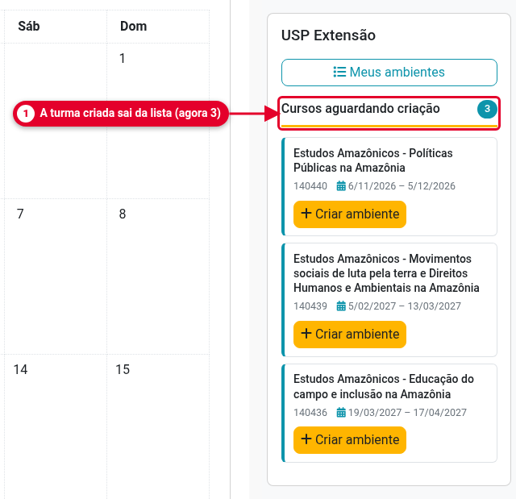
- A turma sai do bloco e passa a ter Acessar em Meus ambientes.
Inscrição dos alunos
Não é preciso inscrever ninguém. Acompanhe pela coluna No curso Moodle dos Detalhes da turma.
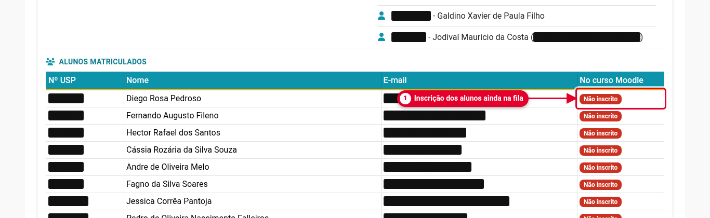
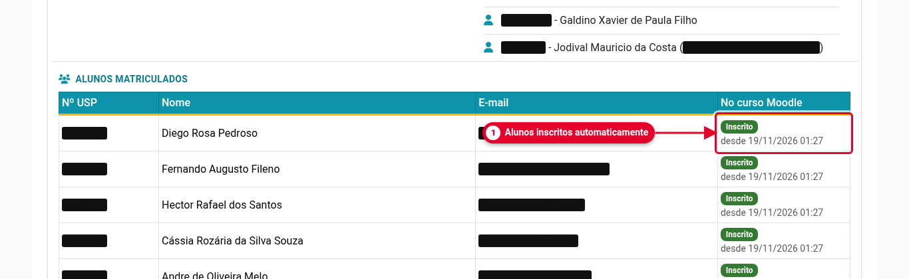
- Inscrito no curso, desde a data indicada.
- Inscrito (suspenso) no curso, mas sem acesso.
- Não inscrito ainda não entrou; “sem conta no Moodle” indica que a conta será criada.
Meus ambientes
Pelo botão Meus ambientes do bloco: todas as turmas em que você é responsável ou ministrante.
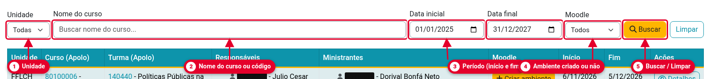
- Unidade (só as das suas turmas).
- Nome do curso ou código.
- Período: turmas que começam a partir da data inicial e terminam até a final. Padrão: 1º de janeiro do ano passado a 31 de dezembro do próximo ano.
- Moodle: todos, só com ambiente (Criado) ou só sem (Não criado).
- Buscar / Limpar.
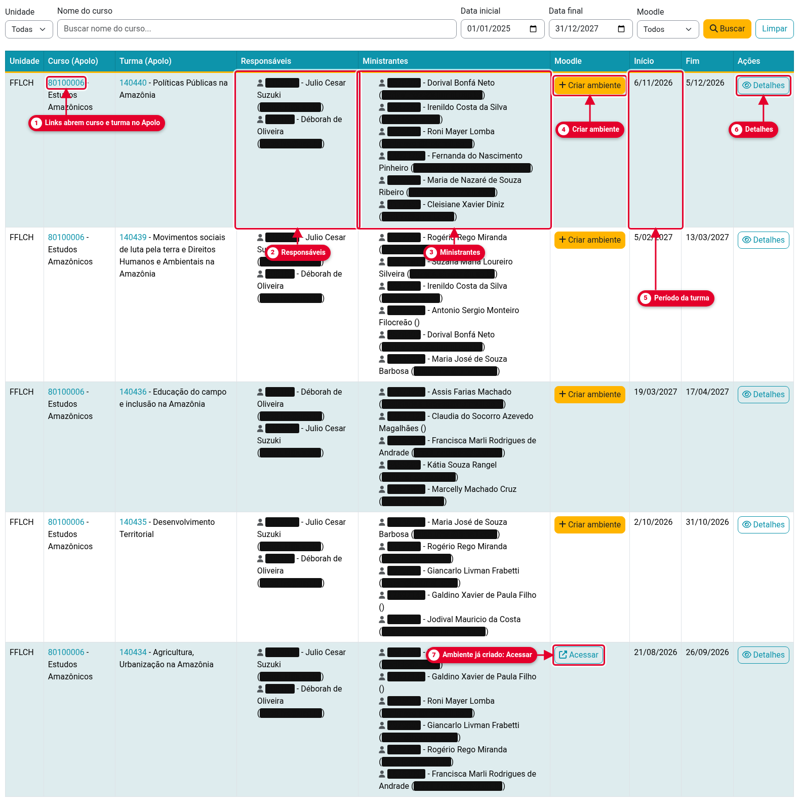
- Códigos de curso e turma abrem o Apolo.
- Responsáveis.
- Ministrantes.
- + Criar ambiente, se ainda não existe.
- Início e fim da turma.
- Detalhes da turma.
- Acessar o curso, se já existe.
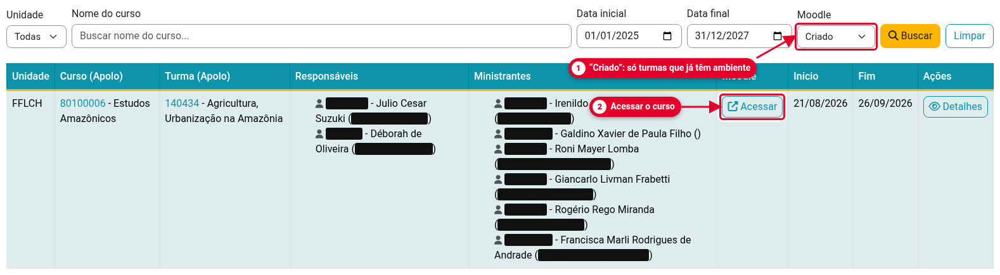
Detalhes da turma
Pelo botão Detalhes em Meus ambientes.
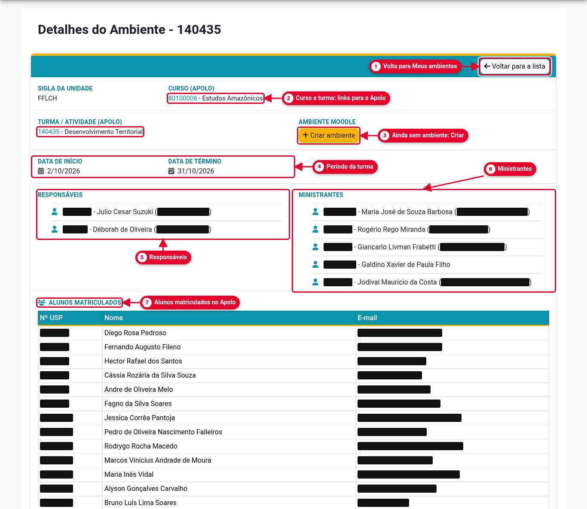
- Voltar para a lista.
- Curso e turma, com links para o Apolo.
- + Criar ambiente, se ainda não existe.
- Período.
- Responsáveis.
- Ministrantes.
- Alunos matriculados no Apolo.
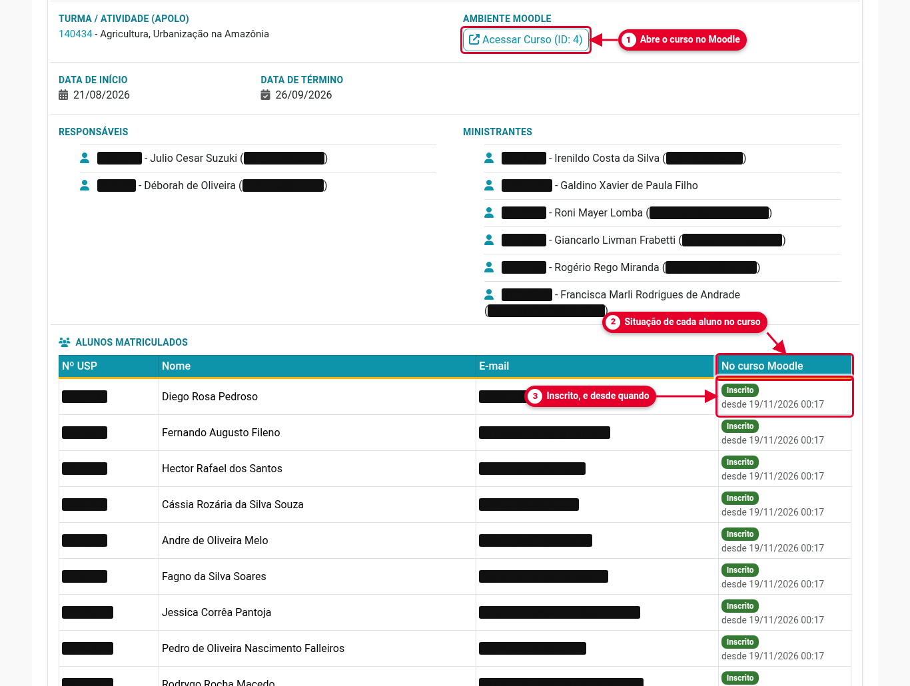
- Acessar Curso.
- Com ambiente criado, aparece a coluna No curso Moodle…
- …com a situação de cada aluno.
Quem vê o quê
| Perfil | Vê | Pode criar ambiente |
|---|---|---|
| Responsável / ministrante | Só as próprias turmas | Das próprias turmas |
| Gerente de categoria | Todas as turmas da unidade | De qualquer turma da unidade |
Ao abrir uma turma que não é sua, aparece:
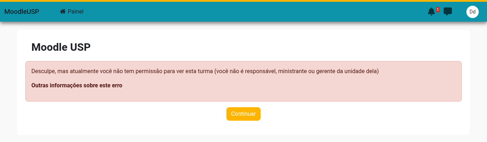
O que muda
O gerente usa as mesmas telas, mas vê e pode criar o ambiente de todas as turmas da sua unidade, de qualquer ministrante. Turmas de outras unidades continuam fora do alcance.
Bloco
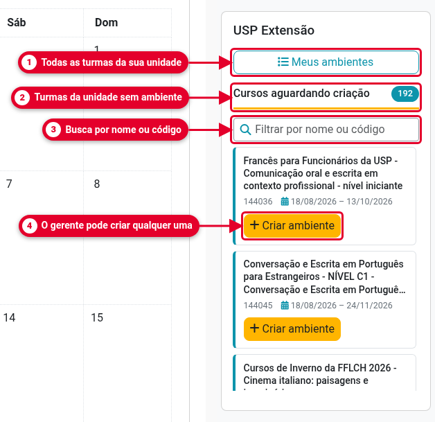
- Meus ambientes: todas as turmas da unidade.
- Turmas da unidade sem ambiente.
- Busca por nome ou código.
- Qualquer uma pode ser criada.
Ambientes da unidade
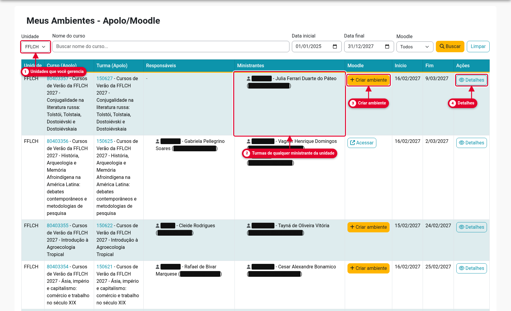
- Unidade: as que você gerencia.
- Turmas de todos os ministrantes da unidade.
- + Criar ambiente.
- Detalhes.
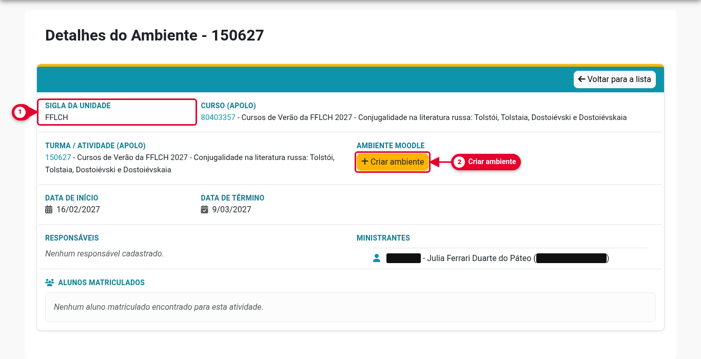
- Turma da sua unidade: abre mesmo sem você ser ministrante.
- + Criar ambiente.
Criar ambiente
Mesmo formulário de Criar o ambiente, com duas diferenças:
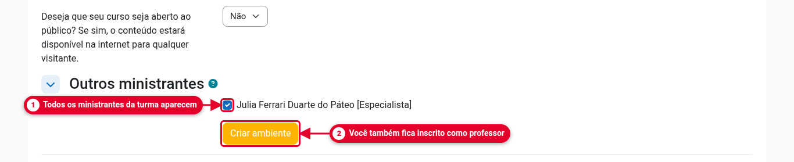
- Todos os ministrantes da turma aparecem, já marcados.
- O gerente também entra no curso como professor (pode sair depois em Participantes).
Dúvidas frequentes
Minha turma não aparece no bloco.
Turmas novas chegam do Apolo de madrugada. Confira também se você está cadastrado nela no Apolo e se ela já não tem ambiente (nesse caso, está em Meus ambientes).
Não encontro uma turma em Meus ambientes.
Confira o período nos filtros ou clique em Limpar.
Um aluno ainda não está no curso.
A inscrição é automática: logo após a criação e, depois, toda madrugada enquanto o curso não terminou. Se ele se matriculou hoje, aparece amanhã.
Um aluno cancelou, mas continua no curso.
A sincronização não retira alunos. Remova-o em Participantes, se necessário.
Quero mudar o nome ou a descrição do curso.
Esses dados vêm do Apolo e ficam travados no Moodle, inclusive na criação. Corrija-os no Apolo antes de criar o ambiente, ou procure o suporte.
Esqueci de marcar um ministrante.
Inscreva-o como professor em Participantes.
Fui levado direto a um curso ao clicar em Criar ambiente.
Outra pessoa já tinha criado o ambiente dessa turma.
Glossário
| Termo | Significado |
|---|---|
| Apolo | Sistema da USP com os cursos de Cultura e Extensão, turmas, ministrantes e alunos. |
| Turma | Oferecimento de uma atividade, com código no Apolo (ex.: 140435). |
| Ambiente | O curso no Moodle de uma turma. |
| Responsável / ministrante | Quem atua na turma, conforme o Apolo. |
| Gerente de categoria | Quem gerencia a categoria de uma unidade no Moodle. |
| Período adicional | Tempo extra de acesso após o fim da turma. |